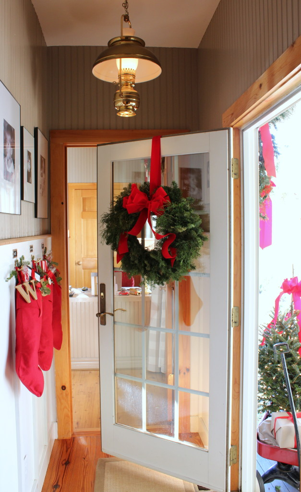
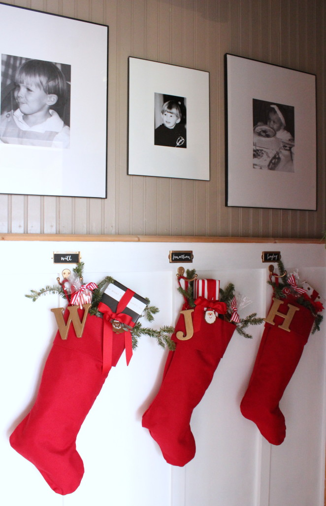

.png)
.PNG)
.PNG)
.PNG)
.PNG)
.PNG)
.JPG)
.JPG)
.PNG)
.PNG)


I hope your Christmas Day was filled to the brim with special time spent with all the special people in your life. We had a very good day with all the children here and visits with both sets of grandparents. I will tell you more about it next week, but first, I want to share a few photos with you…..photos that were supposed to be in posts earlier in the week to show you the last of our Christmas decorating. I’m afraid I simply ran out of time for it before Friday.
Let’s start with the stockings hanging on the wall with care…
I added the children’s initials to them this year.
They were super easy to make using these chipboard letters painted with antique gold Rub ‘n Buff.
 Just add screw eyes to the top of each letter and run a small piece of ribbon through each to tie them to the stocking loop.
Just add screw eyes to the top of each letter and run a small piece of ribbon through each to tie them to the stocking loop.
In that same small hallway, wrapped gift boxes sit on a chair with boots below.
And beside the hallway, the playroom has a Grinch theme going on this year.
Santa got cookies and hot coffee for his trip. 🙂
Don’t you just love this message from the book? 🙂
On the other side of the playroom, the foyer has its sleigh full of greenery and a jar full of goodies. I’ll also tell you more about the treats in the jar next week.
From the foyer, take a look around the family room.
Our tree is dressed a little more simply this year…no ribbon garland and no assortment of red ribbon bows….just lights, tinsel, and ornaments tied on with ribbon.
Of course there is a jar with sugar “snow” and a glittered reindeer.
The mantel has a Letters to Santa theme this Christmas.
Our old red mailbox from Pottery Barn fits in beautifully there, along with a magnifying glass and letter opener set from Hobby Lobby.
This book was the inspiration for all of it.
The old letters to Santa in it are precious. 🙂
Dear Santa: Children’s Christmas Letters and Wish Lists, 1870 – 1920
Back in the bedrooms, the boys have a tree for their dresser.
I turned off the tree lights so that you can see all the letters on it.
Their desk has wrapped gifts with more of the chipboard letters and a toy van with a bottle brush tree tied on.
Earlier in the month, I mentioned that I was helping my mother decorate her dining room for Christmas. Several of you asked if I would show it to you here on the blog. So before this holiday season is gone, let me do just that. 🙂 First, I want you to see that my parents have the same Willow Tree nativity figures that we collect. They display theirs in the foyer by the front door. (My mother did the painting of Jean-Honore Fragonard’s A Young Girl Reading.)
My parents dining room is much more formal than the dining area in our house.
My mother and I mixed their Macy’s Holly Christmas china with Lenox Maywood salad plates for their Christmas table.
The centerpiece is a large pot of poinsettias with maidenhair fern sitting inside a berry wreath.
My mother has a collection of ivory angels and nativity figures displayed in the china cabinet.
On the opposite wall is an old dresser below another piece of artwork painted by my mother…
and another arrangement of poinsettias and maidenhair fern.
You can see my parents’ Christmas tree sits in the foyer right outside their dining room.
And that brings us to the end of all the Christmas decorating for this year…but I am not ready to jump on New Year’s Day things quite yet. I have a party and our Christmas Day to share with you. So if you are still interested in a little more Christmas, please be sure to visit here again next week. We are going to continue celebrating right up to New Year’s Eve. 🙂
Enjoy the rest of your holiday weekend!
Until next time…


.PNG)
Your home is so lovely. I love all your attention to detail and
your thoughtful decorating. I love the room above the garage
for games and just visiting. How nice to have a getaway spot
as well decorated as that! Is your tree real? It is breathtaking.
Pat
Your mum is such a talented artist Kelly and has a beautiful home! Her collection of ivory angels is stunning. I found myself wondering if you draw or paint? Other than your furniture, I mean 🙂
Thank her for sharing her home with us all. Your family room tree and the boys room as always look great …. bright cheery and welcoming. I think it stands out that as beautiful as your rooms always look, first and foremost it’s a home and not just a very stylish house.
I enjoy the time after Christmas Day to relax and enjoy all the decorations …and really appreciate them!
Rosemary
Love all the seasonal décor and you must have had fun expanding the decorating over to your mom’s. I am intrigued by the book of letters to Santa and just know I would love to read that. I see where some of my friends have already taken their tree or Christmas decorations down – I just don’t get that! Now, is the time when things have calmed down a little to sit back and enjoy it all. I am baking cookies (still) and staying warm indoors now that our spring like temps have been replaced with snow, sleet, and cold. Brrrr!
Your home is so warm and welcoming and your Christmas decor is just perfect! By the way, I’m in love with your bookcases – little jealous, not gonna lie! 🙂
———————————————————————
You are too sweet. The bookcases are really nice. My husband built them, and we were inspired by some at an inn we stayed at a year before building the house. If we ever move, all those books are going to be VERY heavy!
Kelly
I love taking in every little detail of your posts. I love the initials. I have been wanting to do this. I love how your’s turned out. Your chalk boards are always so cute and I love the trees in buckets. We cut a little cedar sampling, but I couldn’t find a small bucket stored upstairs. I’ll definitely find the bucket for next year since I love yours so much. 🙂 The icicles on your tree are so pretty and nostalgic. And how lovely is your mom’s dining room. I see you may have influenced her curtain selection. 😉 What talent she has!! Her paintings are beautiful!
Oh Kelly! How I love this post! First of all your mother is soooo talented. What a treat to see her work and her beautiful dining room at Christmas. I love the small Christmas trees in galvanized buckets. The Grinch table and chalkboard are great. One thing I remember from your blog is you having a telephone in your closet so you could talk to your mother as you got ready for school. Soooo special and how special that you help her decorate for Christmas. This, I would say is a blessing for you both. I look forward to whatever you write about.
Thanks for finishing showing us your decorations. Your Mom’s paintings are beautiful. What a talented lady.
Can I come and spend Christmas with you next year Kelly? Everything is so pretty. And I noticed your Coke Life cans in one glass container. We tried them this year but can’t say they are worth the price. Just give me plain old Coca Cola. I am beginning to put everything away today. Ready for the New Year and new projects.
So beautiful, as usual! Love the idea of the stockings waiting for your children to come back home 🙂 I hope you had a wonderful Christmas together!
Checked curtains run in the gene pool!!! And I love that Fragonard painting, too… keep a refrigerator magnet of it on my fridge. All of the DR greenery looks beautiful!
It’s all so beautiful, Kelly – warm, inviting and festive. Your attention to detail never ceases to amaze me, and your mother’s dining room is lovely – adore the centerpiece. Hope your Christmas was wonderful and wishing you all the best in the new year!
Everything is so pretty. I so love the Dr.Seuss quote. On another note, your Mother is extremely talented. Talent runs in the family I guess. Happy Holidays to you.
I love your sense of style, and especially your use of colors!
Brenda
Kelly, Your mother’s paintings are so beautiful! I see where you got your artistic/creative eye. Remember to get some rest now. Your friend, Julia
Your mom’s home is lovely – and she is a wonderful artist! Amazing! So beautiful! Thank you for sharing!
Beautiful as always. Gosh you are good! You and your themes and how well they work without being obnoxious, are something I envy! I just love your creativity! Can you believe it’s all over now? We keep our tree up until New Year’s Day, but it always makes me sad to see it go! May you have a blessed New Year!
Kelly everything is so beautiful for Christmas! I loved getting to sneak a peek at your mom’s house. Wow, I knew she was talented, too! I did not know she painted. Her work is amazing!
Your home is beautiful as always! Pinning loads of ideas for next year! Your mother’s home is beautiful, too! Hope you have a wonderful New Year and may the Lord bless you richly in all kinds of ways! Happy New Year!
I absolutely can not wait for new posts and this one was great! Loved seeing your Mom’s home and art work, I too am a wannabe but your Mom has great talent!
Your home is precious. Thank you for sharing your Mom’s home. I can see where you get your talent from. I am a
wannabe artist but your Mom does a beautiful job.
Merry Christmas from my house to yours.
Jeanne
Everything is always so busy before Christmas, it seems I love the actual day and the week following so much. This post is a treat. Your home embellishes a Christmas welcome without a doubt. What child young or old would not feel special receiving those beautiful stockings? I love the addition of the initials. Your tree is gorgeous, the theme of the playroom is just right, and the lettering is perfect, of course! Your fireplace mantle theme grabs the spirit of childhood wishes so well. Love the book! Thank you for sharing your mom’s home. I know wonderful memories are made there. I can tell you have her heart for home and family. Thank you, Kelly, for once again making my Christmas season merry and bright!
Sherry
What a treat to see a peek of your mom’s home! What a talented artist she is! I had remembered that you said she was an artist and that you helped her decorate her dining room, so I was very excited to see this post! Her paintings are beautiful! Has she painted portraits of your children? I always get so many ideas from your posts. I just watched a movie on Netflix called Dear Santa. Then I saw this post. My husband always writes a letter to each of our children from Santa. I have saved all of them so I think this is a sign to put the letters into a book for each of them. I guess it would have to be called From Santa though. Nevertheless, inspired! I also love your Grinch chalkboard. That is one of my favorite book quotes as well. I am looking forward to your 2016 posts and more inspiration. Thank you, Kelly!
Oh…thanks for the pics of your parents dining room. Lovely…..but then I would expect nothing less! Your mom is a great artist! Must be where you get your talent from! I’m not done with Christmas yet either….so I look forward to another post or two! 😉
Your mother is quite an artist! I think her home is beautiful.
As always, you take a theme and run with it. I am not so good at that, but you do it wonderfully.
Happy Christmas!
Kelly,
Thank you for sharing more of your Christmas decorations with us. It all looks so nice. My favorite is the playroom of course. I love all of the green in there and the saying you wrote on the chalk board is my favorite one from the French movie. My daughter and I had to watch them both this year again ( the original cartoon and the newer Jim Carey one).
We have been enjoying the time off and hanging out with family. Take care.
Dawn
Merry Christmas Kelly! I just love this post! Your Christmas house is such an inspiration! I love how you always have a theme that is continued through each room! I want to read the Santa Letter book. Your tree is so big and gorgeous and of course I always like that you use fresh greenery and a real tree!🎄
Wow.. Your mom is so talented and now I see where you get your talent from! Lucky you! Her dining room is so pretty all dressed for Christmas. I always look for that pretty fern y’all used and I can never find it in western NC.
Like you, we have had a great holiday with family and friends. Emery (5) and Tripp (15 months) made everything magical for all of us. The week before the 25th Emery could hardly contain herself!
I am already looking forward to 2016 and more great posts from Kelly.
Kelly,
As we were touring the final touches of Christmas at your house it reminds me of James Farmer’s house you shared with us some Christmases ago. You do such special touches to each room you style. Your mom’s house looks lovey. Such a pretty post.
I’ll look forward to reading your next one! 🙂
xo,
Karen
I never tire of seeing your Christmas decorations. The tree is gorgeous as always and I love the Grinch chalkboard. Your mother is very talented. The paintings are very pretty as is her dining room. Thanks for sharing in this very busy time of the year!
Merry Christmas to you and yours!
Been waiting for this post. Please send more.
Everything is lovely as usu
Thanks to your parents for allowing our visit.
I see lots of Kelly in this home too.
All the the lovely art work and writing is visible at your parents’ home as well. The art is beautiful! I also notice the check drapes. Both homes show us a family that loves and is caring! Thanks!
Morning Kelly, Louvina may have had raindrops quietly falling at her house earlier today,but unfortunately I was awaken by the pounding of raindrops on our roof. Glad to receive today’s post from you and loving your mother’s dining room and her beautiful artwork. We had a wonderful family Christmas Eve celebration at my sister’s home, and Christmas day the family spent at our house. Yesterday, I sat and read a book, watched a Hallmark movie, ate leftovers, and nibbled on cookies. Christmas 2015, and so far all 27 days in December, without snow in my part of Ohio. I know I’m not the only one loving this.
Hi Kelly, Yes, more Christmas please! Thanks for sharing your Mom’s dining room – it’s beautiful. I noticed the gingham curtains too. Always enjoy your posts!
Hi Kelly what a lovely homes both you and your mom have. I see the gingham curtains in the dinning room !!! Your’s was the first blog that I ever signed up for and it is such a treat to read your posts. Best wishes for 2016 to you and your family from sunny and hot South Africa. Wouldn’t mind some snow!!
Sitting on my screened porch listening to the raindrops quietly falling on our green tin roof–jumped over to your site and what a blessing I received– a post Christmas suprise! Not only some more of your sweet decorations but a most beautiful calm and serene decorations of your mama’s home! Just took my breath away!! Thank you for sharing with us and all I can say ” the apple doesn’t fall far from the tree!” What a wonderfully talented mother you have and she taught you well in homemaking and making each detail so important! All IS calm– all is bright!! Sweet Dreams and looking forward to a peaceful New Year! ❤️ Lou